── Attaching core tidyverse packages ──────────────────────── tidyverse 2.0.0 ──
✔ dplyr 1.1.3 ✔ readr 2.1.4
✔ forcats 1.0.0 ✔ stringr 1.5.0
✔ ggplot2 3.4.3 ✔ tibble 3.2.1
✔ lubridate 1.9.2 ✔ tidyr 1.3.0
✔ purrr 1.0.2
── Conflicts ────────────────────────────────────────── tidyverse_conflicts() ──
✖ dplyr::filter() masks stats::filter()
✖ dplyr::lag() masks stats::lag()
ℹ Use the conflicted package (<http://conflicted.r-lib.org/>) to force all conflicts to become errors
library(olsrr)
Attaching package: 'olsrr'
The following object is masked from 'package:datasets':
rivers
library(car)
Loading required package: carData
Attaching package: 'car'
The following object is masked from 'package:dplyr':
recode
The following object is masked from 'package:purrr':
some
Exercise 1: The medical director at your company wants to know if Weight alone can predict Cholesterol outcomes. Consider modeling Cholesterol as a function of Weight.
Fit a linear regression model for Cholesterol as a function of Weight. If any points are unduly influential, note those points, then remove them and refit the model. Consider Cook’s distance cut-off to be 0.015.
Comments The calculated Spearman Correlation is 0.1078544. With this in mind, we know that the Spearman Correlation is robust to outliers in the given data in the selection; therefore, this indicates a significantly low correlation between our Weight and Cholesterol variables.
Performing Model Diagnostics
plot(linearmodel.heart, which=c(1:4))
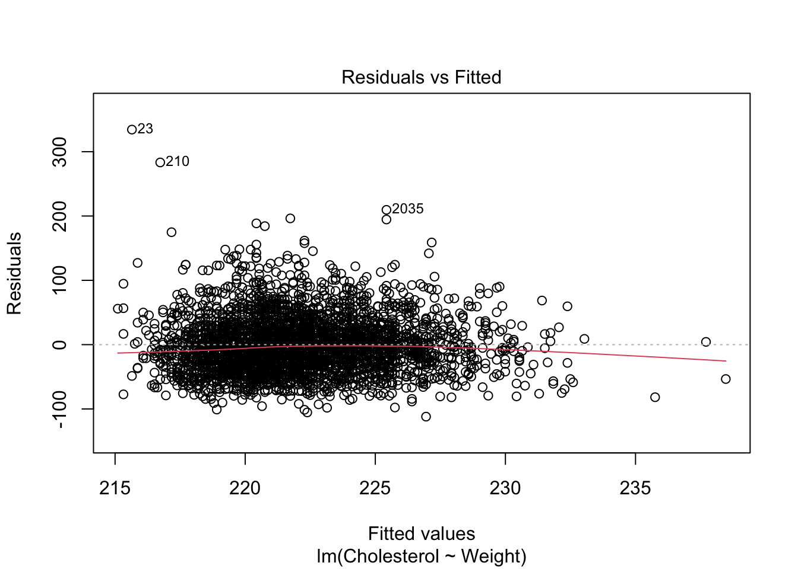
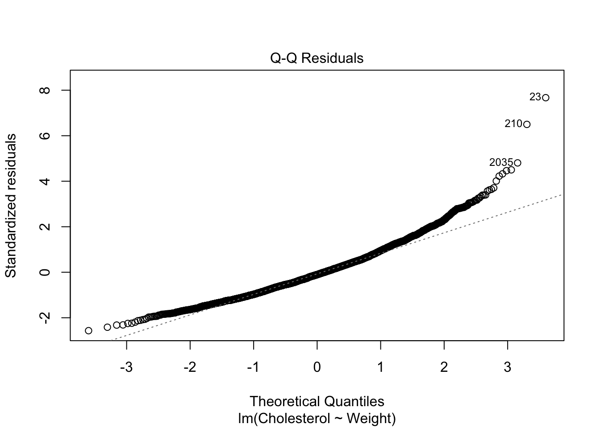
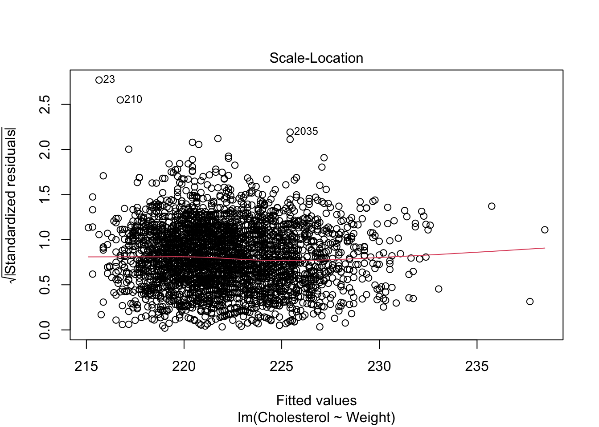
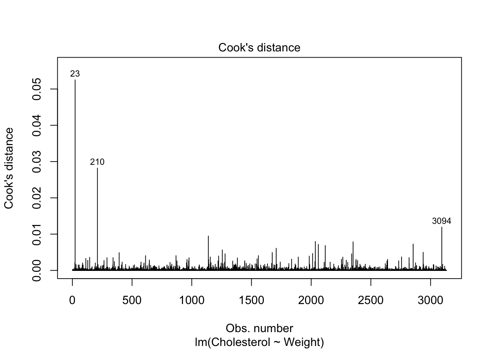
par(mfrow=c(2,2))
Conclusion - When looking at the Standardized Residual Plot, the normality assumption is not reasonable because many points fall above the y-axis (1.5). - In addition, when looking at the Normal QQ-Plot, many of the points fall on the straight, gray line; however, towards the end of the line, some of the points (23 and 210) are unduly influential points distanced away from the gray line. Based on this, we can determine that our normality assumption is not reasonable as well. - Third, when we consider Cook’s Distance Plot, it is observed that points 23 and 210 are also unduly influential points that are substantially separated. - When checking for Equal Variance, we look at the Standardized Residuals Plot and can note there is clearly a pattern in the residual plot, which as a result supports heteroscedasticity.
Comment on the significance of the parameters, variation explained by the model, and any remaining issues noted in the diagnostics plots. What does this model tell us about the relationship between Cholesterol and Weight? Interpret the relationship specifically. Explain to the medical director whether this is a good model for predicting Cholesterol levels.
R-Output
summary(linearmodel.heart)
Call:
lm(formula = Cholesterol ~ Weight, data = heart)
Residuals:
Min 1Q Median 3Q Max
-111.95 -29.59 -4.64 23.49 334.35
Coefficients:
Estimate Std. Error t value Pr(>|t|)
(Intercept) 205.86763 4.24729 48.470 < 2e-16 ***
Weight 0.10867 0.02786 3.901 9.78e-05 ***
---
Signif. codes: 0 '***' 0.001 '**' 0.01 '*' 0.05 '.' 0.1 ' ' 1
Residual standard error: 43.62 on 3132 degrees of freedom
Multiple R-squared: 0.004835, Adjusted R-squared: 0.004518
F-statistic: 15.22 on 1 and 3132 DF, p-value: 9.778e-05
Comments - When looking at Individual Term Significance, we shall look at the p-value from the T-test of Weight. As shown above, we can see that it contains a value of 9.78e-05, which as a result falls below the significance level of 0.05. With this in mind, we can clearly reject the Null Hypothesis (H0) and make the conclusion that there is a clear linear relationship between the variables of Weight and Cholesterol. - When checking for Equal Variance, we look at the Standardized Residuals Plot and can note there is clearly a pattern in the residual plot, which as a result supports heteroscedasticity. - When looking at Model Significance, we can check the p-value, which is 9.778e-05, as a result this would mean this would also fall below the significance level of 0.05. Therefore, we can reject the Null Hypothesis (H0) and can make the conclusion that the linear regression model is useful, which means at least one Beta is not equal to zero. - When looking at the Estimated Regression Line we know that our estimated regression line as ŷ = 205.86763 + 0.10867x. Based on this we can say that Cholesterol can be expected to have a 0.10867 increase with one unit increase of Weight. - When looking at R-Squared, we can see that there is only 0.4835% of the variation in Cholesterol that can further be explained by the variable of Weight. Therefore, we should be very clear that this is not a good model for the prediction of Cholesterol level (low predictive power). Overall, we should not recommend this model (Weight) to the medical director for the prediction of Cholesterol level.
Exercise 2: The medical director wants to know if blood pressure and weight can better predict cholesterol outcomes. Consider modeling cholesterol as a function of diastolic, systolic, and weight.
Fit a linear regression model for cholesterol as a function of diastolic, systolic, and weight. Generate the diagnostics plots and comment on any issues that need to be noted. For Cook’s distances, do not leave any points that have Cook’s distance greater than 0.015.
Fitted Linear Regression Model (Cholesterol ~ Diastolic, Systolic, and Weight)
linearmodel.heart2 =lm(Cholesterol~., data = heart)
Scatter Plot and Correlation (Cholesterol ~ Diastolic, Systolic, and Weight)
pairs(heart)
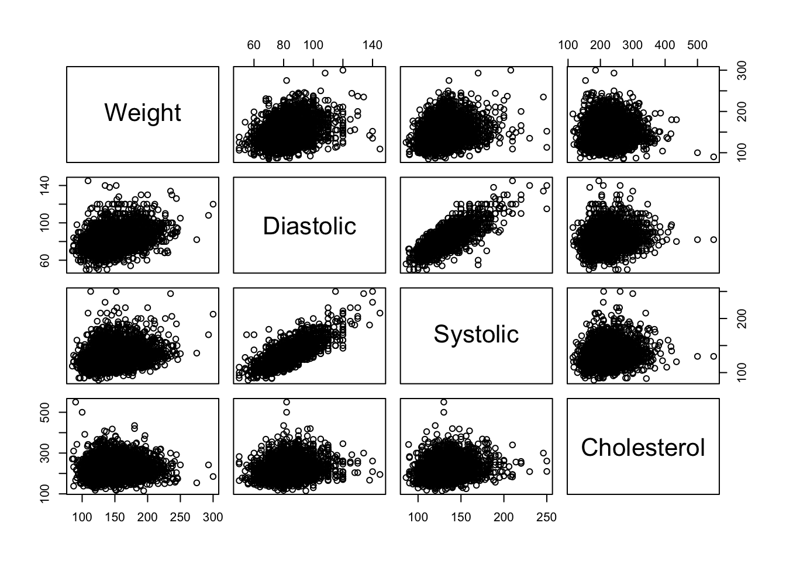
Comments Based on the scatter plot above, there appears to be a strong linear relationship between both our variables Diastolic and Systolic.
Performing Model Diagnostics
plot(linearmodel.heart2, which=c(1:4))
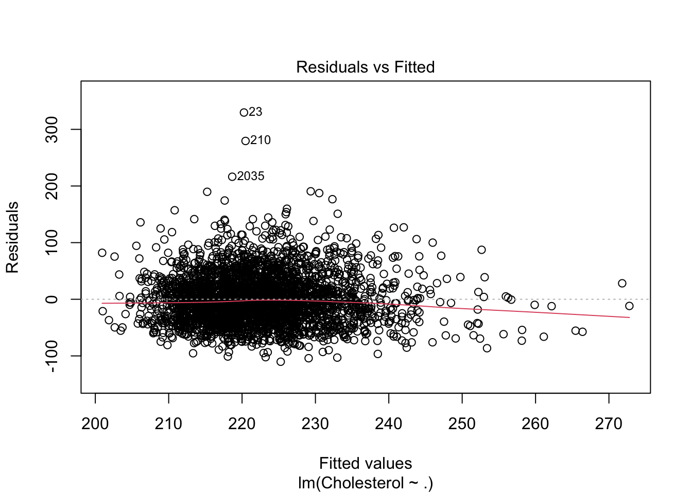
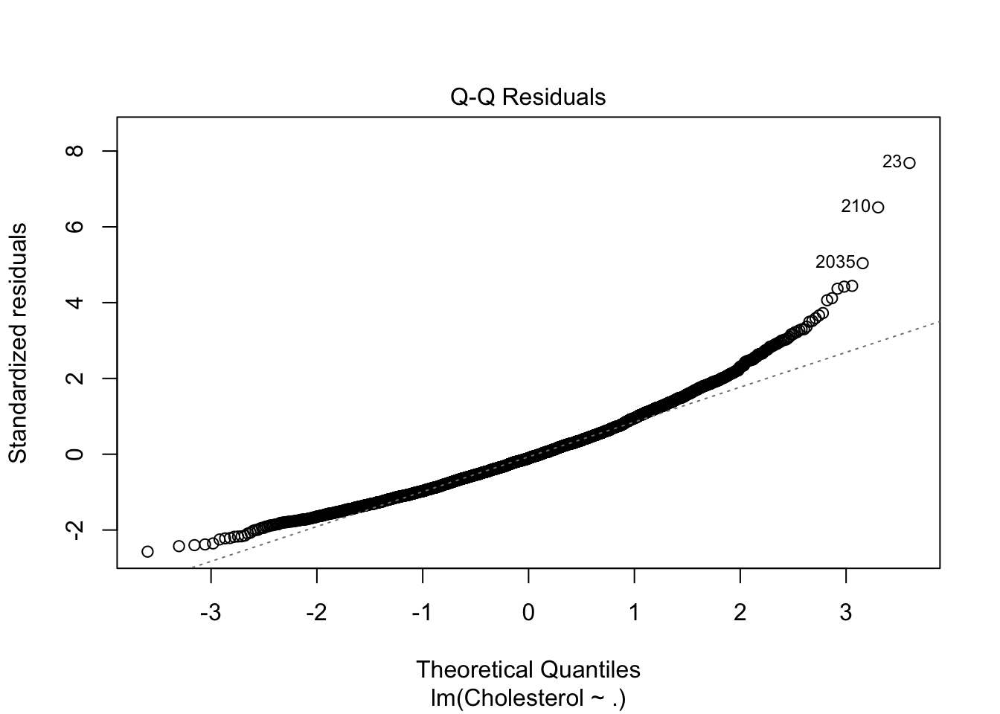
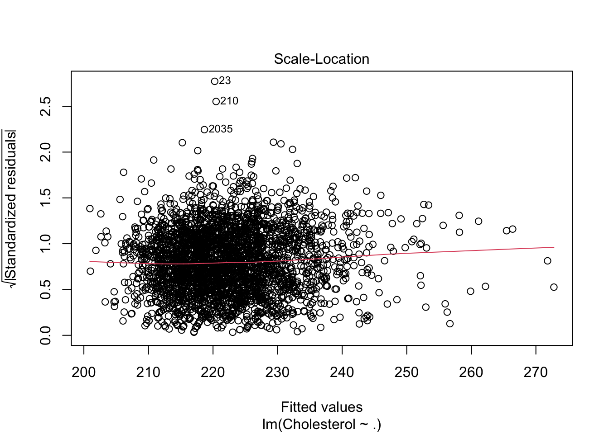
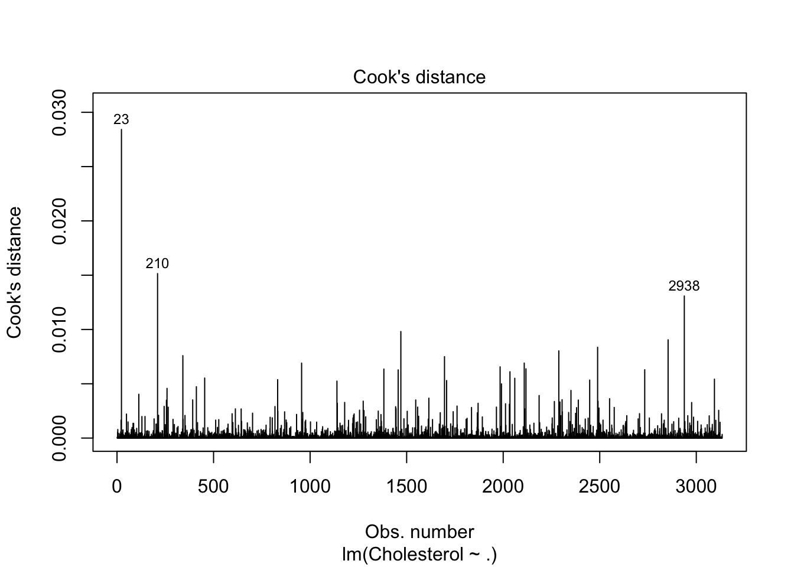
par(mfrow=c(2,2))
Conclusion - When looking at the Standardized Residual Plot, it is clear that the normality assumption is not reasonable, because many points fall above y-axis (1.5). - In addition, when looking at the Normal QQ-Plot, it is clear that many of the points given can fall on the straight grey line, based on our normality check. However, towards the end of the line some of the points 23, 210, 2035 for instance are unduly influential points distanced away from the grey line. Based on this, we can determine that our normality assumption is not reasonable as well. - When checking for Equal Variance, we look at the Standardized Residuals Plot and can note there is clearly a pattern in the residual plot, which as a result supports heteroscedasticity. - Fourth, when we consider Cook’s Distance Plot above, it is observed that points 23 and 210 are also unduly influential points, that are very far separated. Confirming Two Points have Cook’s Distance Greater than 0.015
Comments As seen above, Cook’s Distance Plot is clearly greater than 0.015. Now we will refit the model.
Remitted Model
linearmodel.heart2 <-lm(Cholesterol~., data = heart[-influentialpoints, ])
Comment on the significance of the parameters and how much variation in cholesterol is described by the model. Comment on the relationship between cholesterol and statistically significant predictor(s). Check multicollinearity issues among predictors. Explain to the medical director whether this is a good model for predicting Cholesterol levels.
R-Output
summary(linearmodel.heart2)
Call:
lm(formula = Cholesterol ~ ., data = heart[-influentialpoints,
])
Residuals:
Min 1Q Median 3Q Max
-110.617 -29.371 -4.476 23.755 216.041
Coefficients:
Estimate Std. Error t value Pr(>|t|)
(Intercept) 156.32618 6.27153 24.926 < 2e-16 ***
Weight 0.03671 0.02860 1.284 0.1994
Diastolic 0.24922 0.10665 2.337 0.0195 *
Systolic 0.30073 0.06340 4.743 2.2e-06 ***
---
Signif. codes: 0 '***' 0.001 '**' 0.01 '*' 0.05 '.' 0.1 ' ' 1
Residual standard error: 42.26 on 3128 degrees of freedom
Multiple R-squared: 0.03767, Adjusted R-squared: 0.03675
F-statistic: 40.81 on 3 and 3128 DF, p-value: < 2.2e-16
Comments
When looking at Individual Term Significance, we shall look at the p-value from the T-test of Diastolic, Systolic, and Weight.
Diastolic: As shown above, we can see that it contains a p-value of 0.0195, which as a result falls below the significance level of 0.05. With this in mind, we can clearly reject the Null Hypothesis (H0) and make the conclusion that there is a clear linear relationship between the variables of Diastolic and Cholesterol. -Systolic: As shown above, we can see that it contains the least amount of p-value containing 2.2e-06, which as a result also falls below the significance level of 0.05. With this in mind, we can clearly reject the Null Hypothesis (H0) and make the conclusion that there is a clear linear relationship between the variables of Systolic and Cholesterol. -Weight: As shown above, we can see that it contains a p-value of 0.1994, which as a result falls above the significance level of 0.05. With this in mind, we can clearly cannot reject the Null Hypothesis (H0) and make the conclusion that there is no linear relationship between the variables of Weight and Cholesterol.
When looking at Model Significance from the F statistic, we can check the p-value, which is < 2.2e-16, as a result this would mean this would also fall below the significance level of 0.05. Therefore, we can reject the Null Hypothesis (H0) and can make the conclusion that the linear regression model is useful, which means at least one Beta is not equal to zero.
When looking at the Estimated Regression Line we know that our estimated regression line as ŷ = 156.32618 + 0.24922(Diastolic) + 0.30073(Systolic).Based on this we can say with a one unit increase in Diastolic, Cholesterol will increase by 0.24922, while Systolic stays constant. On the other hand, with one unit increase in Systolic, Cholesterol will increase by 0.30073, while Diastolic stays constant.
When looking at R-Squared, we can see that there is only 3.767% of the variation in Cholesterol that can further be explained by the variables of Diastolic and Systolic. Therefore, we should be very clear that this is not a good model for the prediction of Cholesterol level (low predictive power). Overall, we should not recommend this model (Weight) to the medical director for the prediction of Cholesterol level.
Multicollinearity Being Checked With VIF (Variance Inflation Factors)
Conclusion Overall, our predictor variables, such as Diastolic, Systolic, and Weight have not exceeded the VIF cutoff, which is 10, as a result we can make a clear conclusion that they are not correlated with each other, since it would be very low correlation if anything.
Exercise 3: Now consider stepwise model selection for the Cholesterol model. Before performing the model selection, we remove influential points detected in Exercise 2, which have a cook’s distance larger than 0.015.
Perform stepwise model selection with .05 criteria and address any issues in diagnostics plots.
Comments Based on the above Stepwise Selection Model, the variables Diastolic and Systolic should be included in the Final Model.
Linear Model Without Weight
linearmodel.step =lm(Cholesterol~ Systolic + Diastolic, data = heart[-influentialpoints, ])
Scatter Plots
plot(linearmodel.step, which=c(1:4))
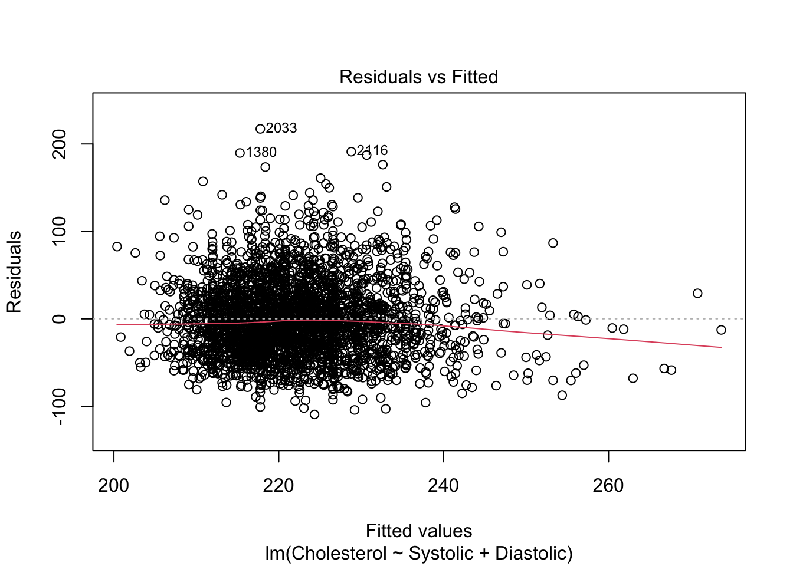
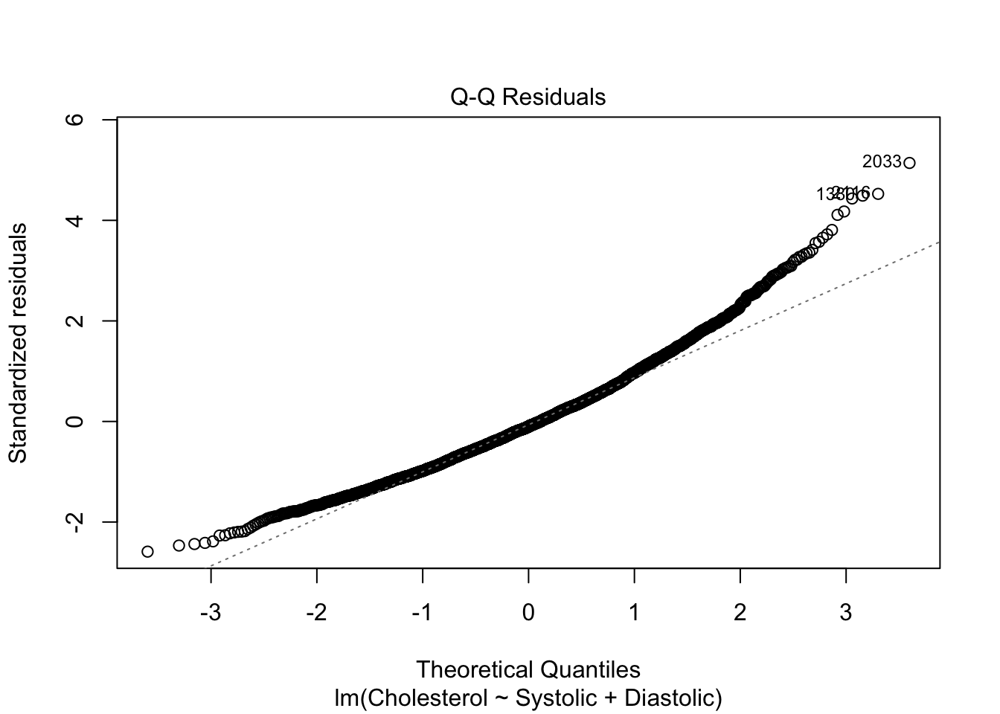
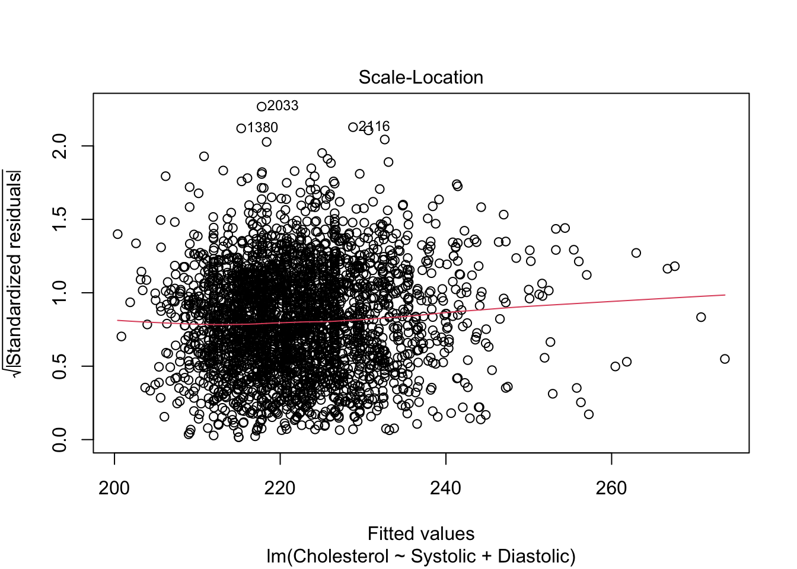
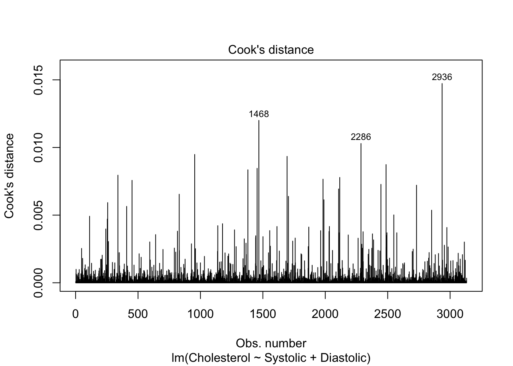
par(mfrow=c(2,2))
Comments - When looking at the Normal QQ-Plot, it is clear that many of the points given can fall on the straight grey line for the most part, based on our normality check. However, towards the end of the line some of the points curve off the line. Based on this, we can determine that our normality assumption is not reasonable as well. - In addition, when checking for Equal Variance, we look at the Standardized Residuals Plot and can note there is clearly a pattern in the residual plot, which as a result supports heteroscedasticity.
Interpret the final model and comment on the variation in Cholesterol explained. Compare the variations explained by the models from Exercises 1 and 2. R-Output
linearmodel.step =lm(Cholesterol~ Systolic + Diastolic, data = heart)summary(linearmodel.step)
Call:
lm(formula = Cholesterol ~ Systolic + Diastolic, data = heart)
Residuals:
Min 1Q Median 3Q Max
-109.52 -29.58 -4.57 23.79 328.47
Coefficients:
Estimate Std. Error t value Pr(>|t|)
(Intercept) 159.63995 5.91244 27.001 < 2e-16 ***
Systolic 0.30193 0.06442 4.687 2.89e-06 ***
Diastolic 0.27609 0.10612 2.602 0.00932 **
---
Signif. codes: 0 '***' 0.001 '**' 0.01 '*' 0.05 '.' 0.1 ' ' 1
Residual standard error: 42.94 on 3131 degrees of freedom
Multiple R-squared: 0.03589, Adjusted R-squared: 0.03527
F-statistic: 58.27 on 2 and 3131 DF, p-value: < 2.2e-16
Comments - When looking at Individual Term Significance, we shall look at the p-value from the T-test of Diastolic and Systolic. - Diastolic: As shown above, we can see that it contains a p-value of 0.00932, which as a result falls below the significance level of 0.05. With this in mind, we can clearly reject the Null Hypothesis (H0) and make the conclusion that there is a clear linear relationship between the variables of Diastolic and Cholesterol. -Systolic: As shown above, we can see that it contains the least amount of p-value containing 2.89e-06, which as a result also falls below the significance level of 0.05. With this in mind, we can clearly reject the Null Hypothesis (H0) and make the conclusion that there is a clear linear relationship between the variables of Systolic and Cholesterol.
When looking at Model Significance from the F statistic, we can check the p-value, which is < 2.2e-16, as a result this would mean this would also fall below the significance level of 0.05. Therefore, we can reject the Null Hypothesis (H0) and can make the conclusion that the linear regression model is useful, which means at least one Beta is not equal to zero.
When looking at the Estimated Regression Line we know that our estimated regression line as ŷ=159.63995 + 0.30193(Systolic) + 0.27609(Diastolic). Based on this, with a one unit increase in Systolic, Cholesterol will increase by 0.30193, while Diastolic stays constant. On the other hand, with a one unit increase in Diastolic, Cholesterol will increase by 0.27609, while Systolic stays constant.
When looking at R-Squared, we can see that there is only 3.589% of the variation in Cholesterol that can further be explained by the variables of Diastolic and Systolic. Therefore, we should be very clear that this is not a good model for the prediction of Cholesterol level (low predictive power). Overall, we should not recommend this model (Weight) to the medical director for the prediction of Cholesterol level.
Comparison of Variations Between Models of Exercise 1 and 2 Exercise 1: We can see that there is only 0.4835% of the variation in Cholesterol that can further be explained by the variable of Weight. Therefore, we should be very clear that this is not a good model for the prediction of Cholesterol level (low predictive power). Exercise 2: We can see that there is only 3.767% of the variation in Cholesterol that can further be explained by the variables of Diastolic and Systolic. Therefore, we should be very clear that this is not a good model for the prediction of Cholesterol level (low predictive power).
As a conclusion from these exercises, both can tell us to be very clear that all variables, such as Weight, Diastolic, and Systolic are not good models for the prediction of Cholesterol levels, therefore meaning very low predictive power.
Exercise 4: Now consider the best subset selection for the Cholesterol model. Again, we remove influential points detected in Exercise 2, which has a cook’s distance larger than 0.015, before performing the model selection.
Find the best model based on adjusted-R square criteria and specify which predictors are selected. Finding Best Model
Comments -When specifying which predictors are the best, it is clear and obvious it includes the variables, Diastolic, Systolic, and Weight in the Model 3. -When looking at the Best Model for our variable, Cholesterol, based on adjusted-R square criteria it would have to be Model 3, due to the fact it has the highest adjusted R-square of 0.0367.
Find the best model based on AIC criteria and specify which predictors are selected. Comments -When specifying which predictors are the best, it is clear and obvious it includes the variables, Diastolic and Systolic in the Model 2. -When looking at the Best Model for our variable, Cholesterol, based on AIC criteria it would have to be Model 2, due to the fact it has the lowest AIC out of all three of 32344.7321.
Compare the final models selected in a) and b). Also, compare the final models from the best subset approach with the final model from the stepwise selection. Comparisons
When comparing our final models selected in both A and B, it is clear that both models AIC and Adjusted R-Square based have p-values lowered under the significance level of 0.05, as a result, we can say that these models as useful. In addition, they contain both our variables, Diastolic and Systolic predictors in their models that contain p-values that also are lowered under the significance level of 0.05. Finally, we can make the conclusion that there is a significant linear relationship between these 2 predictors, such as Diastolic and Systolic and Cholesterol.
Overall, the Best Subset Approach with the Stepwise Selection returned our variables of Diastolic and Systolic predictors. As a result , we can say that the final selected model is Y = 159.63995 + 0.30193 (Systolic) + 0.27609 (Diastolic) + E.